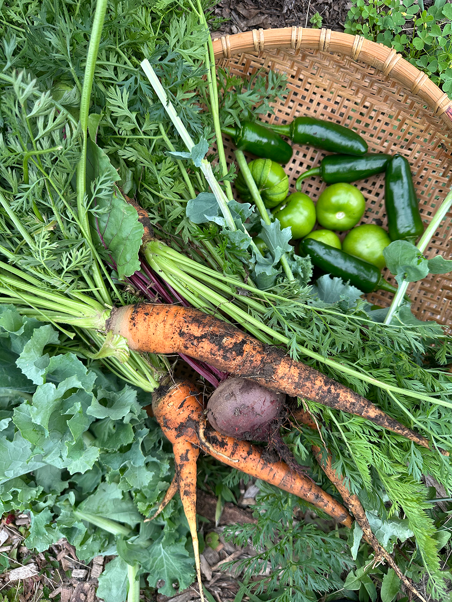
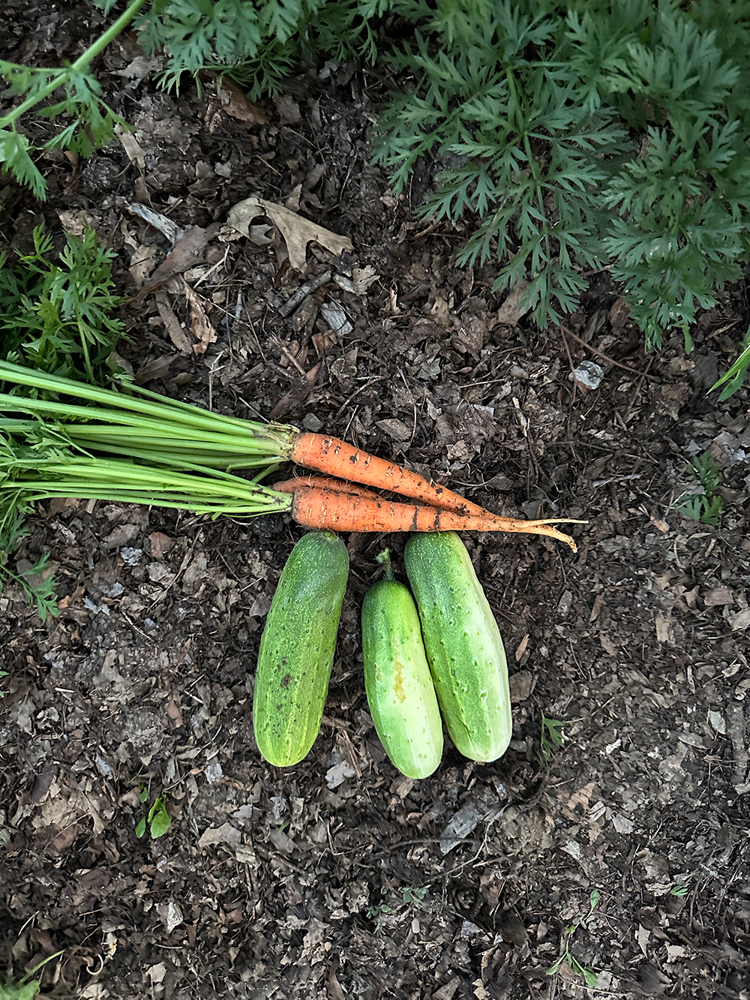

Cox Scholar & Graphic Design BFA Student | Indiana University
avgallen@iu.edu
Avrie Allen currently studies Graphic Design and Art History. Avrie is working to develop collaborative publications and platforms for the creation of a class-conscious feminist culture. She is currently interested in concepts of ethical media, feminist internet, the handmade web, and internet ecology.
Budding ideas and more insight to past projects can be found on my ✶✶ are.na
Current Roles
- Graphic Designer
Center of Excellence for Women & Technology - Graphic Design Intern
the Kinsey Institute - Freelance Graphic Designer
for individuals & organizations


